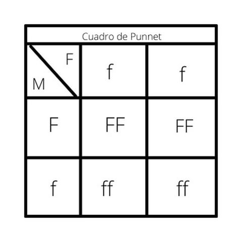

La genética es un área de las ciencias biológicas que se encarga del estudio de las bases de la herencia y la diversidad que existe entre los seres vivos.
La genética es el estudio de la herencia, el proceso en el cual un padre le transmite ciertos genes a sus hijos. La apariencia de una persona (estatura, color del cabello, de piel y de los ojos) está determinada por los genes. Otras características afectadas por la herencia son:
-Probabilidad de contraer ciertas enfermedades
-Capacidades mentales
-Talentos naturales
Algunas de estas variaciones pueden provocar un gen que es anormal. Un gen anormal puede conducir a una proteína anormal o a una cantidad anormal de una proteína normal. Si uno de estos genes es anormal, el otro puede producir suficiente proteína para que no se desarrolle ninguna enfermedad. Cuando esto sucede, el gen anormal se denomina recesivo. Si se presentan dos copias del gen anormal, puede desarrollarse la enfermedad. Sin embargo, si únicamente se necesita un gen anormal para producir la enfermedad, esto lleva a que se presente un trastorno dominante hereditario. En el caso de un trastorno dominante, si un gen anormal se hereda de la madre o el padre, el niño probablemente manifestará la enfermedad. A una persona con un gen anormal se la denomina heterocigoto para ese gen. Si un niño recibe un gen anormal para enfermedad recesiva de ambos padres, manifestará la enfermedad y será homocigoto para ese gen.
Viajemos por el cuerpo de un raton (resultado de los progenitores)
Veamos un ejemplo de este
Determine de genotipo de la F1 de una pareja de ratones donde la hembra es homocigoto reseciva y su pelaje es blanco y el macho es heterocigoto de color negro
Caracteristicas: Color de pelaje : Blanco:f Negro:F
homocigoto dominante: 0%
FF:50% ff:50%